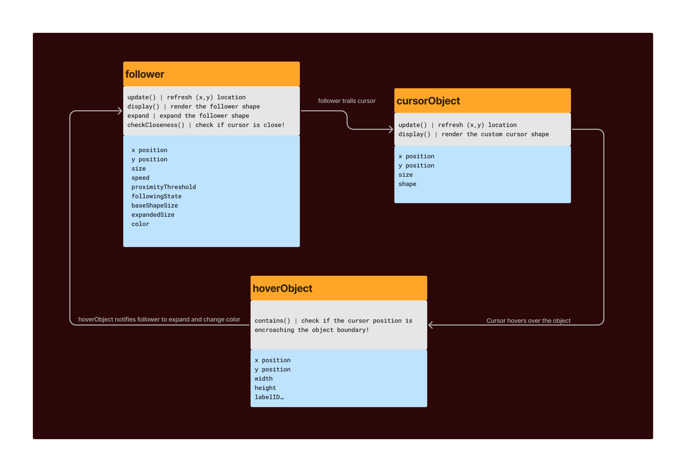
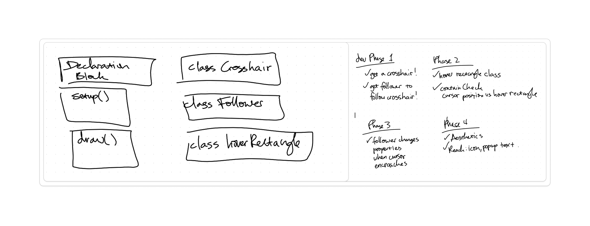

Mikey R | 11/19/24
Lately, I’ve been OBSESSED with creative websites that use custom cursors. I feel it adds some playfulness but also opens ideas to how we navigate an interface! In the example below, a "cursor follower" is used that add more visual context to what's being hovered-over!
Drawing up the idea helps me form pseudocode but also identifies the actors. Just start sketching! These actors will each become an object/class in the p5.js. I like using analog tools here to remind me that it'll be rough and drafty. Digitize later for documentation.
This then helps me form the UML diagram nicely! I use FigJam to maintain this block diagram seen below. I treat it as a living diagram, where in case I want to add new features, I would add more properties and functions to each subsystem. The sketches above helped me capture them a lot already.
I don't like coding straight away but really taking the time to architect how the code will shape up! I like to abstract the project into "blocks" of code and break down formidable coding efforts to smaller bite sized phases/goals. This helps me chip away at it will balancing work and life! In this case, each of the classes were identified as significant "blocks".
